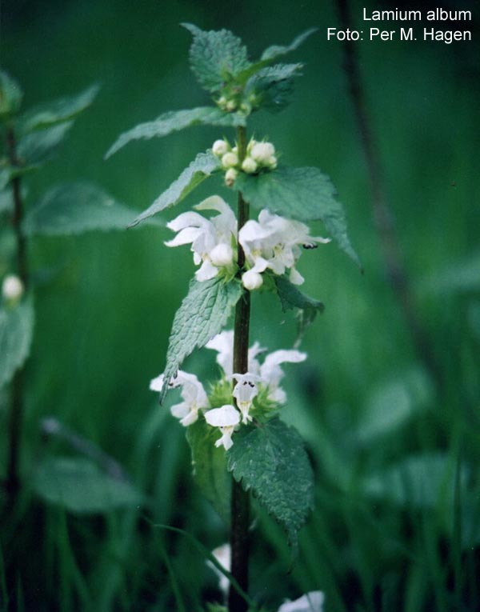
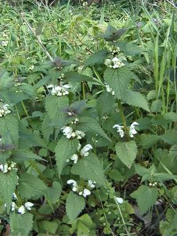

|
ECONOMICALLY
IMPORTANT PLANTS OF INDIA |
| Under-utilized Food and Fodder species and their wild relatives | Contributed by Ms.M.L Annapurna And Dr. Dhanapal, UAS, Bangalore |
Lamium album
Taxonomic Details

----- Correct Name
----- Classification
----- Synonyms
----- Common Names
Other Biological Details
----- Habit and Habitat
----- Diagnostic Features
----- Reproductive Biology
---------- Breeding System
---------- Phenology
---------- Pollinators
---------- Seed Biology
----------Seed Germination
------ Cultivation
----- Major Pests and Diseases
Economic Potential and Uses
----- Parts Used
----- Uses
----- Harvesting Practices
----- Produce and Products
----- Chemistry
----- Processing Techniques
----- Other uses
----- Economic Potential to the
Country
----- Export Potential
Miscellaneous Information
Literature
Correct Name : Lamium album

Family : Labiatae
Synonyms :
Common Names :
Eng: White dead nettle
HABIT & HABITAT:
An ascending or decumbent, glabrous or hispid hairy perennial herb, 25-50
cm. High, with a creeping rootstock, found in waste places and along road sides
in Western Himalayas from Kashmir to Kumaon. Perennial growing to 0.6m by 1m
. It is hardy to zone 4 and is not frost tender
Availability :
Status :
DIAGNOSTIC FEATURES
An ascending or decumbent, glabrous or hispidly hairy perennial herb, 25-50
cm. High, with a creeping rootstock, found in waste places and along road sides
in Western Himalayas from Kashmir to Kumaon. Leaves ovate-cordate, crenate or serrate; flowers white or pale pink, in axillary
whorls; nutlets c. 4mm. Long, smooth, black or dark brown.
Breeding System :
The flowers are hermaphrodite
(have both male and female organs) and are pollinated by Bees.
Pollinators:
Pollinated by bees and is noted for attracting wildlife.
Seed Biology : MAJOR PESTS & DISEASES
Seed Germination:
Seed - this species usually self sows freely and should not require human intervention.
When required it can be sown in situ as soon as it is ripe.
Division in spring: Division succeeds at almost any time in the growing
season.
Very easy, larger clumps can be replanted direct into their permanent positions,
though it is best to pot up smaller clumps and grow them on in a cold frame
until they are rooting well. Plant them out in the spring.
Cultivation:
Soil: Prefers a sunny position,
though it also does well in partial shade. Plants are hardy to about -25°c.
The plant prefers light (sandy), medium (loamy) and heavy (clay) soils, requires
well-drained soil and can grow in heavy clay soil. The plant prefers acid, neutral
and basic (alkaline) soils. It can grow in semi-shade (light woodland) or no
shade. It requires moist soil.
Pests:
Diseases:
Economic
Potential and Uses
Parts used:
Leaves
and flowers.